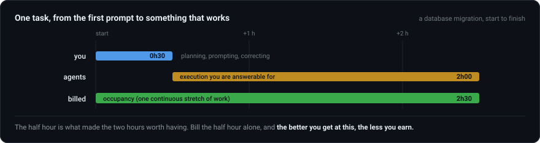
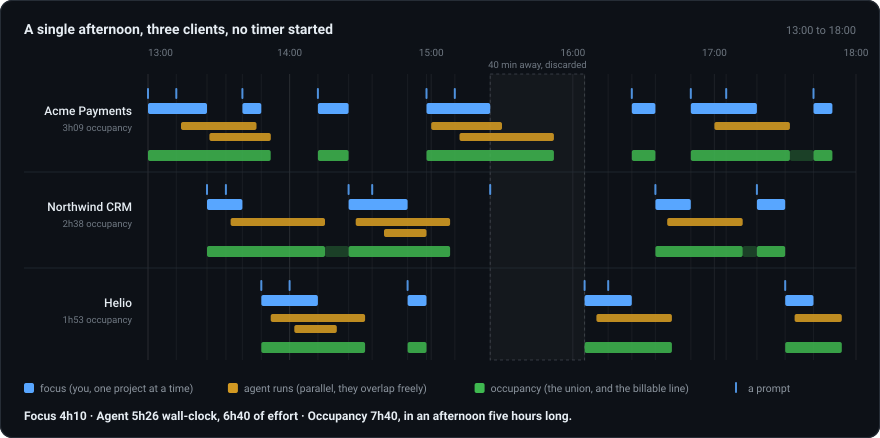
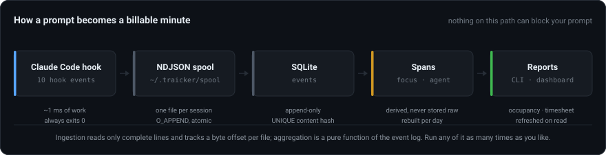

The task, measured
Half an hour of yours. Two hours of theirs.
A developer is hired to guarantee quality, reliability and delivery. That did not change when agents started writing the code. What changed is that the scarce skill moved from writing it to directing it well.

The half hour is not the work made smaller, it is the work made denser. Give the same two hours of execution to someone who can't write that half hour, and the client gets two hours of confident nonsense, delivered on time.
The better you get at this, the less you earn.
That is what billing your own keystrokes gets you. Every improvement in how you brief and correct an agent makes the interval a normal tracker measures shorter.
The same afternoon, counted three ways
Three numbers, kept apart on purpose.
One Tuesday afternoon, three clients, thirteen agent runs, and not one timer started. Switch the layer and watch the total move.
Occupancy overlaps across projects, so it adds up to more than the afternoon is long. That is a real property of the working model.

The part a client asks about
Occupancy is the number you invoice.
It raises the same three questions every time, so here they are with the answers written down.
"If you get faster, do I pay less?"
For the same piece of work, yes. What moves is the rate. An hour that now carries two hours of directed execution is not the hour you sold two years ago, and pricing it the same is the real mistake. Time is the unit, the rate is where skill gets paid.
"Isn't billing two projects for the same hour charging twice?"
It would be, if an hour of occupancy meant you were only on that project. It doesn't, and it must never be sold that way. Two clients each got an hour of engineering. Neither was promised that nobody else did.
"Do you have to be watching for it to count?"
No. You picked the approach, you sent the run, and your name is on
what lands. A client who buys presence instead of delivery is buying something
different, and that's legitimate: put their billing.basis on
focus and the same log answers their question.
What it refuses to measure
Everything else counts the thing that just got cheap.
It needs a decision at the moment of the switch, which is exactly when you have no attention to spare. Hours you forget to start are gone. A timer you forget to stop bills a client for your dinner, and looks as solid as a true number.
Output volume became the easiest signal to fake the moment agents started writing the code. A diff of four thousand lines now costs one prompt and no thought.
It also says nothing about the hour you spent deciding a feature should not be built, which was the most valuable hour of the week.
They measure keystrokes and the window in focus, and that input collapses when the work goes well. An agent working for forty minutes shows up as forty idle minutes, because nobody touched the keyboard.
The long version of all three is in docs/why.md.
How it captures any of this
Claude Code hooks, and a file on your own disk.
Prompting an agent is the act of clocking in. The hook appends a ~200 byte line and exits, so nothing on the path can block your prompt, and nothing polls your machine. No raw prompt text is ever stored.

Three ways to read it
One SQLite file, three front ends.
The fast path, and the only one that scripts.
traicker report --week, traicker timesheet --project acme
--csv, traicker week.
The timeline, the timesheet panel, project settings.
Runs locally. Copy buttons on every timesheet row, because the client's form is already open in another tab.
The same dashboard in an Electron window, with a tray icon.
The server is embedded in it, so there is nothing to start after a reboot. The CLI keeps working against the same database at the same time.
It is open source, and it runs on your machine.
No account, no cloud, no telemetry. The database is a SQLite file in your home directory, and the only thing that ever leaves it is a timesheet sentence, when you explicitly ask a model to write one.